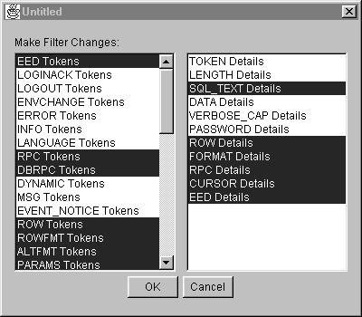

Using
Ribo
Using
Ribo
This document explains how to use the Ribo utility. It contains these sections:
- What is Ribo?
- Starting Ribo
- Capturing Data
- Translating Data
- Using the Ribo GUI
- Using Filters
- Known Problems
What is Ribo?
The Ribo utility captures, translates, and displays the Tabular Data StreamTM (TDS) protocol flowing between a TDS client and TDS server. TDS clients include jConnectTM for JDBCTM, isql, jisql, and Open ClientTM. TDS servers include Adaptive Server® Enterprise, Adaptive Server Anywhere, Adaptive Server IQ, and Open ServerTM.
For more information about TDS tokens, see the TDS 5.0 Functional Specification at http://www.sybase.com/products/TDSfunctionalSpecForm.html.
Ribo has three modes:
- Capture a TDS protocol stream to a file
- Translate a captured file to the TDS protocol's text representation
- Capture a TDS protocol's stream to a file and translate the protocol's text representation to the screen or a GUI window "on-the-fly"
Starting Ribo
Ribo ships with a UNIX shell script and a MS-DOS .bat file. Before you use Ribo:
- Give yourself execute permissions on the UNIX script. At
a command prompt where the Ribo files are installed, type:
chmod +x Ribo
- Set the JAVA_HOME and RIBO_HOME environment variables. For
example:
set RIBO_HOME=c:\jutils-2_0\ribo set JAVA_HOME=c:\jdk1.1.8
Capturing Data
To use Ribo to capture TDS protocol data and save that data to a file, enter the following from a UNIX, Linux, or DOS command window:
Ribo <command_line_options>
Syntax and Parameters
Ribo uses the following syntax and command line options.
Ribo [-l <listen_port>] [-s <server_host>] [-p <server_port>]
[-c <capture_file_prefix>] [-t <trans_file_prefix>] [-x <charset>]
[-gui] [-d] [-f <filter_file>] [-h]
Examples
To have Ribo listen on local machine port 2638 and forward the data to another machine--rubicon, port 2525--you would enter:
Ribo -l 2638 -s rubicon -p 2525
To have Ribo listen on a local machine port 4000, display the data in the gui as it is being captured, and filter the data using a script you have created named myscript.filter, you would enter:
Ribo -gui -l 4000 -f myscript.filter -d
Translating Data
To analyze captured TDS protocol data and save the text representation of that data to a file, enter:
Ribo <input_capture_file> <output_file>
where <input_capture_file> is the name of the file from which to analyze previously captured data and <output_file> is the file name under which to save the translated data. If you do not specify an output file, the translated data is sent to stdout.
The output file displays:
- SQL statements sent to the server
- Parameters sent to the server
- Results returned from the server
Examples
To have Ribo listen on local machine port 2638, translate the TDS protocol data on the fly and the data is being captured, you would enter:
Ribo -l 2638 -t
The data will be written to outX.tds where X matches capX.tds.
To have Ribo translate captured TDS protocol data, you would enter:
Ribo cap0.tds tds0.out
Using the Ribo GUI
To start the Ribo graphical user interface and listen on local machine port 2638, you would enter:
Ribo -gui -l 2638
When you include the -gui parameter, you see this screen:

If you specify the listen port, server host, and server port when you start Ribo, these parameters are filled in for you on the GUI screen.
To capture and translate data:
- Select Preferences from the File menu. You see this dialog box:

- Enter or change the values shown in the dialog box, which correspond to various command line parameters. If you specified a value for these parameters when you started Ribo at the command line, those values display in this dialog box. If you did not specify these parameters, the program displays the default values.
See Table 1 for more details about the command line parameters.
- Capture File Prefix - Corresponds to the -c (capture_file_prefix) parameter. Specify the prefix added to the generated file name of the captured data.
- Translate File Prefix - Corresponds to the -t (trans_file_prefix) parameter). Specify the prefix added to the generated file name of the translated data.
- Translation Filter File - Corresponds to the -f (filter_file) parameter. Displays the file name of the filter you specified when you started Ribo at the command line. See Using Filters for more information.
- Translate to a file - Also corresponds to the -t (trans_file_prefix) parameter. Check this box to translate captured data to the TDS protocol's text representation and save it to a file with the prefix you specified.
- Display Translation in a window - Corresponds to the -d parameter. Check this box to display translated data in the GUI while the data is being captured.
- Click OK.
- Click Start Capture.
- To stop the capture process click Stop Capture. You must stop the capture process to change the host, ports, or Preferences.
- When you finish, click End.
Using Filters
You can create a filter that will show some or every detail of the TDS protocol data using the -f command parameter. If you do not specify a filter file name, the default filter is used. To see the default filter selections, start the Ribo GUI:
Ribo -gui -l 4000 -d
When the GUI displays, select Edit Filter from the File menu. You see a screen similar to this:

The column on the left displays types of tokens; the column on the right displays details available for some or all tokens. Selected items are highlighted and represent the token details you want to see from the TDS protocol data.
Every token that occurs legally in TDS version 5.0 or later is recognized by Ribo. For more information about TDS tokens, see the TDS 5.0 Functional Specification at http://www.sybase.com/products/TDSfunctionalSpecForm.html.
The following table describes the items in the right column.
| DETAIL NAME | DESCRIPTION |
| TOKEN_DETAILS | Refers to information about the (single-byte) token itself, like its hex value and whether it is fixed or variable length. If you do not select (highlight) this detail, only the token name is dumped. Pertains to all tokens. |
| LENGTH_DETAILS | Refers to information about the various length fields found within a token, including the overall token length. Pertains to all tokens. |
| DATA_DETAILS | Refers to all details of the token beyond what is specified by TOKEN_DETAILS. This is what the TDS 5.0 Specification calls the "data stream" that follows the token itself. Pertains to all tokens. |
| VERBOSE_CAP_DETAILS | Specifies that the flags in a capability token are to be dumped in "verbose" format, which indicates the name of each flag and its value. If you do not select (highlight) this detail, the flags are dumped as hex. Pertains only to CAPABILITY tokens. |
| PASSWORD_DETAILS | Specifies that the password contained in the login record is to be dumped. If you do not select (highlight) this detail, the password is dumped. Pertains only to Login Record. |
| Selecting the following details when you have not selected DATA_DETAILS will cause the details to be dumped anyway for certain tokens. That is, these details override DATA_DETAILS. | |
| SQL_TEXT_DETAILS | Refers to the text of a SQL query. When you select (highlight) this detail, it overrides DATA_DETAILS. Pertains only to LANGUAGE tokens. |
| ROW_DETAILS | Refers to the row data of a row, param, alt-row or key token. If you do not select (highlight) this detail, the data is not dumped. Specifying this detail overrides DATA_DETAILS. Pertains only to ALTROW, KEY, PARAMS, RPC, RETURN_VALUE and ROW tokens. |
| FORMAT_DETAILS | Refers to the format data of a param format, row format, or alt row format token. Specifying this detail overrides DATA_DETAILS. Pertains only to ALTFMT, PARAMFMT, ROWFMT, RPC and RETURN_VALUE tokens. |
| RPC_DETAILS | Overrides DATA_DETAILS for DBRPC tokens. Pertains only to DBRPC tokens. |
| CURSOR_DETAILS | Overrides DATA_DETAILS for all cursor tokens. Pertains only to CURCLOSE, CURDECLARE, CURDELETE, CURFETCH, CURINFO and CURUPDATE tokens. |
| EED_DETAILS | Overrides DATA_DETAILS for EED tokens. Pertains to EED tokens only. |
To create a custom filter:
-
Click on an item to highlight and select it; click again to deselect it.
-
Click OK to save your changes. A dialog box displays where you can save the new filter.
-
Type the file name under which to save your custom filter. The name can be anything you want and doesn't require an extension; for example TDS_1.filter or just TDS1.
-
Click Save.
To use a custom filter you have created, enter something similar to this at the command line:
ribo -l 4000 -gui -f TDS_1.filter -d
Known Problems
This section describes problems that are scheduled to be fixed in a future release of Ribo.
- #197508 - DATETIMN conversion throws an exception.
When dumping a file containing a row token with a DATETIMN column, an exception is thrown. Ribo continues to function, but you never see the row token for that row. This is specific to JDK 1.1.8.